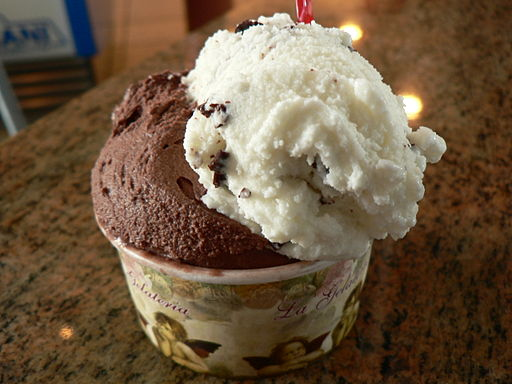

Gelato Recipe

Description
Gelato is a easy recipe that can be set and forgotten.
It does not take a lot of ingredients to make and can be
pretty cheap.
Originally a dish from Italy, Gelato has become a staple
of american cuisne where multiple variations of the dish
can be found across the United States.
Ingredients
- Milk
- Sandwich Bags (Small and Large)
- Ice
- Vanilla
- Sugar
- Chocolate Syrup (Optional)
Steps
- Add milk, sugar, vanilla in a sandwich bag and seal it tightly
- In a different bag add salt and ice
- Place the small bag inside of the big bag
- Shake bag as hard as you can for 5 minutes
- Don't forget to dance... it gives it a little bit of flavor
- Remove small bag and rinse the outside and opening to remove excess salt
Go to Top
Return